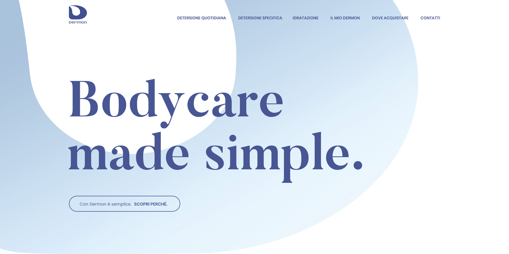
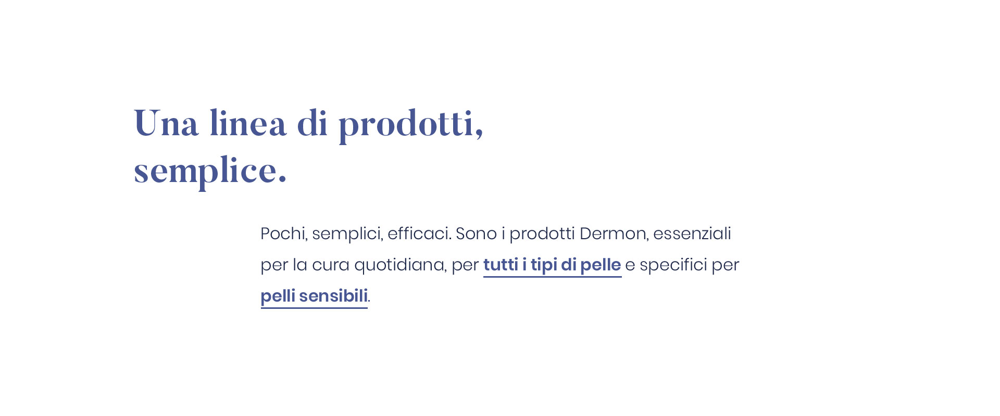
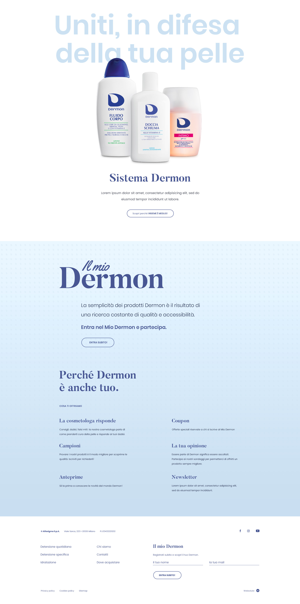

Il primo gesto
Prendersi cura di sé stessi, ogni giorno, è semplice!
La detersione è il primo gesto per prendersi cura della pelle. Lo facciamo tutti i giorni, perché non farlo bene?
Con delicatezza
Ogni tipo di pelle ha la sua sensibilità.
Dermon ti offre una serie di prodotti specifici, alleati delicati per le pelli sensibili e protettivi per chi fa vita attiva.
Pelle morbida
Pulita, non basta.
Pelle morbida, vitale e tonica, perché pulita non basta. I prodotti Dermon preservano il corretto equilibrio idrico.
